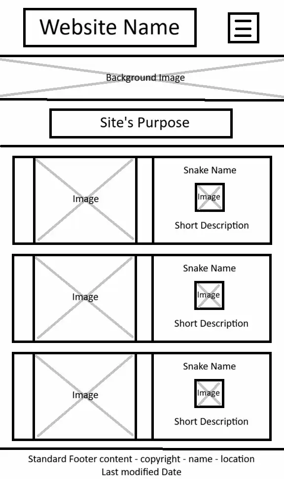
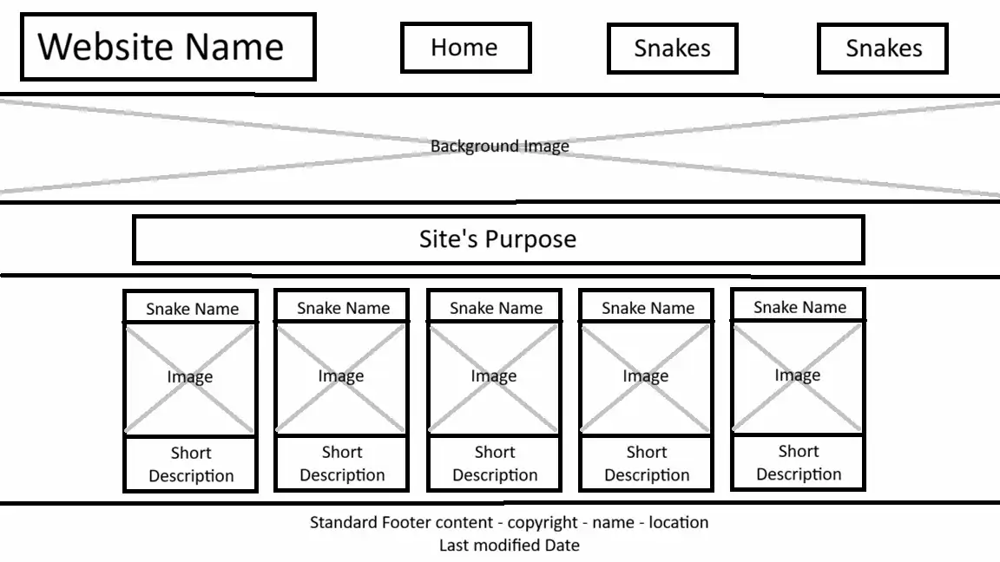

Site Name: Utah Snake Information
This name represents a website for information about snakes in Utah.
Site Purpose:
The site's purpose is to provide information on snakes in addition to what to do if you encounter them.
Scenarios:
Q: What should I do if I hear a rattlesnake's rattle?
A: Freeze and locate the location of the rattlesnake. Make sure to stay 5-10 feet away from the snake. If you need to move, step very slowly away from the rattlesnake.
Q: What should I do if I get bitten by a venomous snake?
A: Call 911, move away from the snake, clean if possible, and stay calm.
Color Schema:
Header & Footer Color
Used for the base header and footer color
Header & Footer Accent
Used for the accents for the header and footer including lines above and below the content
Main Color
Used for base background color for the main page
Main Accent
Used for sections of content on the main page such as text or images
Typography:
The font that will be used is Averia Libre in font weights of 300, 400, and 700.
Examples of uses are as follow:
Heading 1
Heading 2
Heading 3
Paragraph
WireFrames:

Mobile

Wide